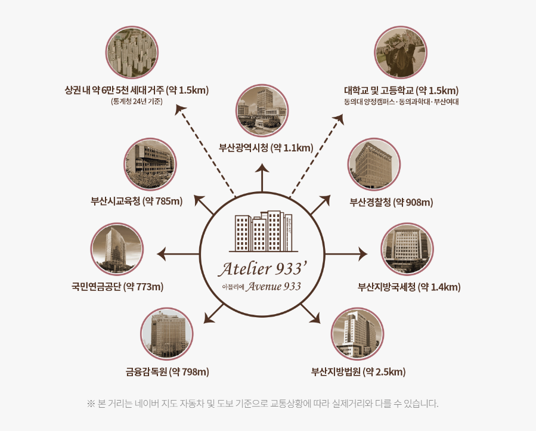

양정 소아과 CLINIC OPENING GUIDE
양정 소아과 개원,
호실보다 운영계획부터 정리해보세요
소아과 개원을 준비할 때는 좋은 위치를 찾는 것과 동시에 실제 진료방식, 예상 환자 수, 필요한 실과 장비를 먼저 정리하는 것이 중요합니다. 유모차, 보호자 동반, 감염 대기 분리와 가족단위 접근을 기준으로 필요한 공간을 구체화하면 호실 비교가 훨씬 명확해집니다.
양정 생활권 안에서 반복 방문과 실제 보행·주차 동선을 중심으로 환자가 어떻게 도착하고 직원이 어떻게 움직이는지, 개원 후 공간을 확장하거나 변경할 여지가 있는지까지 함께 확인하는 것이 좋습니다.
개원 준비 순서를 먼저 정리해보세요
이 순서가 정리되면 같은 면적의 호실도 실제로 쓸 수 있는지 훨씬 빠르게 판단할 수 있습니다. 양정에서 개원을 검토한다면 해당 조건이 실제 호실에서 구현 가능한지 도면과 현장을 함께 확인해보세요.
소아과은 유모차, 보호자 동반, 감염 대기 분리와 가족단위 접근이 중요한 진료과입니다. 좋은 호실을 찾는 것보다 먼저 진료범위, 예상 환자층, 필요한 장비와 실 구성을 정리하는 것이 좋습니다.
양정 소아과 개원 준비 체크리스트
- 소아과 진료범위와 예상 환자 수 정리
- 필요 진료실·검사실·치료공간 수 확정
- 장비·수납·직원공간을 실제 평면에 배치
- 월 관리비·냉난방·추가공사비 예상
- 향후 실 추가·장비 증설 가능성 확인

예상 환자 수에 맞춰 대기공간을 계산해보세요
접수대 앞 혼잡과 진료실 호출 동선까지 고려하면 필요한 공간의 크기를 더 현실적으로 잡을 수 있습니다. 양정에서 개원을 검토한다면 해당 조건이 실제 호실에서 구현 가능한지 도면과 현장을 함께 확인해보세요.
소아과은 유모차, 보호자 동반, 감염 대기 분리와 가족단위 접근이 중요한 진료과입니다. 대기공간은 좌석 수만 보는 것이 아니라 가장 붐비는 시간대에 환자와 보호자가 얼마나 동시에 머무를지를 기준으로 봐야 합니다.

직원 동선과 환자 동선을 따로 그려보세요
접수, 진료, 검사·치료, 수납과 물품 이동을 따로 표시해 서로 겹치는 지점을 확인해보세요. 양정에서 개원을 검토한다면 해당 조건이 실제 호실에서 구현 가능한지 도면과 현장을 함께 확인해보세요.
소아과은 유모차, 보호자 동반, 감염 대기 분리와 가족단위 접근이 중요한 진료과입니다. 환자에게 편한 공간이라도 직원이 수납과 장비, 서류를 위해 계속 긴 거리를 움직이면 운영효율이 떨어질 수 있습니다.

초기 공사비보다 변경 가능성을 확인하세요
벽체 이동과 전기·급배수 증설이 가능한지 확인하면 향후 확장과 변경에 대응하기 쉬워집니다. 양정에서 개원을 검토한다면 해당 조건이 실제 호실에서 구현 가능한지 도면과 현장을 함께 확인해보세요.
소아과은 유모차, 보호자 동반, 감염 대기 분리와 가족단위 접근이 중요한 진료과입니다. 개원 초기에는 현재 계획에 맞춰 인테리어를 하지만 운영하면서 진료실 수나 장비 구성이 바뀔 수 있습니다.

예약 운영과 비예약 방문의 비율을 생각해보세요
예약 간격과 평균 진료시간을 기준으로 가장 붐비는 시간대를 예상해보는 것이 좋습니다. 양정에서 개원을 검토한다면 해당 조건이 실제 호실에서 구현 가능한지 도면과 현장을 함께 확인해보세요.
소아과은 유모차, 보호자 동반, 감염 대기 분리와 가족단위 접근이 중요한 진료과입니다. 진료과에 따라 예약환자 중심인지 당일 방문 비중이 높은지에 따라 필요한 대기공간과 접수방식이 달라질 수 있습니다.
초진보다 재진이 편한 위치인지 확인하세요
주차장과 지하철에서 호실까지의 이동이 단순하고 안내가 명확한지 확인해보세요. 양정에서 개원을 검토한다면 해당 조건이 실제 호실에서 구현 가능한지 도면과 현장을 함께 확인해보세요.
소아과은 유모차, 보호자 동반, 감염 대기 분리와 가족단위 접근이 중요한 진료과입니다. 의료기관은 한 번의 방문보다 반복 방문이 중요할 수 있어 두 번째 방문부터 얼마나 쉽게 찾아오는지가 중요합니다.
양정 소아과 개원 준비 체크리스트
- 소아과 진료범위와 예상 환자 수 정리
- 필요 진료실·검사실·치료공간 수 확정
- 장비·수납·직원공간을 실제 평면에 배치
- 월 관리비·냉난방·추가공사비 예상
- 향후 실 추가·장비 증설 가능성 확인
운영비를 월 단위로 계산해보세요
예상 매출만 보는 것보다 월 고정비와 변동비를 함께 계산해 호실별 부담을 비교하는 것이 좋습니다. 양정에서 개원을 검토한다면 해당 조건이 실제 호실에서 구현 가능한지 도면과 현장을 함께 확인해보세요.
소아과은 유모차, 보호자 동반, 감염 대기 분리와 가족단위 접근이 중요한 진료과입니다. 분양·임대 조건 외에도 관리비, 냉난방, 장비전력, 소모품과 추가 공사비가 장기 운영에 영향을 줄 수 있습니다.
개원 이후 확장 가능성까지 비교하세요
인접 호실 확장 가능성이나 내부 재배치 여유가 있는지 확인하면 장기 운영 계획을 세우는 데 도움이 됩니다. 양정에서 개원을 검토한다면 해당 조건이 실제 호실에서 구현 가능한지 도면과 현장을 함께 확인해보세요.
소아과은 유모차, 보호자 동반, 감염 대기 분리와 가족단위 접근이 중요한 진료과입니다. 처음에는 작은 규모로 시작해도 환자 증가나 장비 추가로 공간이 부족해질 수 있습니다.
양정 소아과 개원 자주 묻는 질문
양정 소아과 상가 개원 자리 입지 애비뉴933을 개원 준비와 운영계획 관점에서 검토할 때 자주 확인하는 내용을 정리했습니다.
양정 소아과 개원 자리를 찾기 전에 무엇부터 정리해야 하나요?
먼저 소아과의 진료범위, 예상 환자 수, 필요한 진료실과 장비를 정리하는 것이 좋습니다. 이 기준이 있어야 면적과 설비, 동선을 실제 운영계획에 맞춰 비교할 수 있습니다.
소아과 개원에서 예상 환자 수는 왜 중요한가요?
예상 환자 수에 따라 필요한 대기좌석, 접수대 크기, 진료실 수와 직원 수가 달라질 수 있습니다. 가장 붐비는 시간대를 기준으로 공간을 계산해보는 것이 좋습니다.
양정 소아과 개원에서 직원 동선도 따로 봐야 하나요?
네. 환자에게 편한 공간이라도 직원이 수납과 장비, 서류 때문에 계속 장거리를 이동하면 운영효율이 떨어질 수 있습니다. 환자와 직원 동선을 따로 그려 비교해보세요.
애비뉴933에서 소아과 개원 시 확장 가능성도 봐야 하나요?
초기에는 작은 규모로 시작해도 진료실이나 장비가 늘어날 수 있습니다. 내부 재배치 가능성과 인접 공간 확장 가능성을 확인하면 장기 운영에 도움이 됩니다.
소아과 개원에서 월 운영비는 어떤 항목을 봐야 하나요?
관리비, 냉난방비, 장비 전력, 인건비, 소모품, 추가 공사비 등을 함께 계산하는 것이 좋습니다. 분양·임대조건과 별도로 실제 월 부담을 비교해보세요.
양정 소아과 개원은 예약 중심인지 비예약 중심인지에 따라 자리 기준이 달라지나요?
달라질 수 있습니다. 예약 중심이면 대기공간 부담이 줄 수 있지만 특정 시간대에 환자가 몰릴 수 있고, 비예약 방문이 많다면 넉넉한 대기와 접수 동선이 더 중요할 수 있습니다.
소아과 개원 시 호실을 최종 결정하기 전에 무엇을 확인해야 하나요?
실제 장비와 가구를 넣은 평면배치, 급배수·전기·환기 조건, 공사 가능범위와 개설 가능 여부를 문서 기준으로 다시 확인하는 것이 좋습니다.
현재 소아과 개원 가능한 호실은 어떻게 확인하나요?
가능 호실과 면적, 분양·임대조건은 시점과 호실에 따라 달라질 수 있습니다. 소아과의 진료계획과 필요한 공간을 기준으로 최신 조건을 개별 상담에서 확인하는 것이 정확합니다.
양정 소아과 개원
운영계획에 맞는 호실을 비교해보세요.
- 현재 분양 가능 호실 안내
- 호실별 면적·위치·동선 비교
- 희망 업종별 설비조건 상담